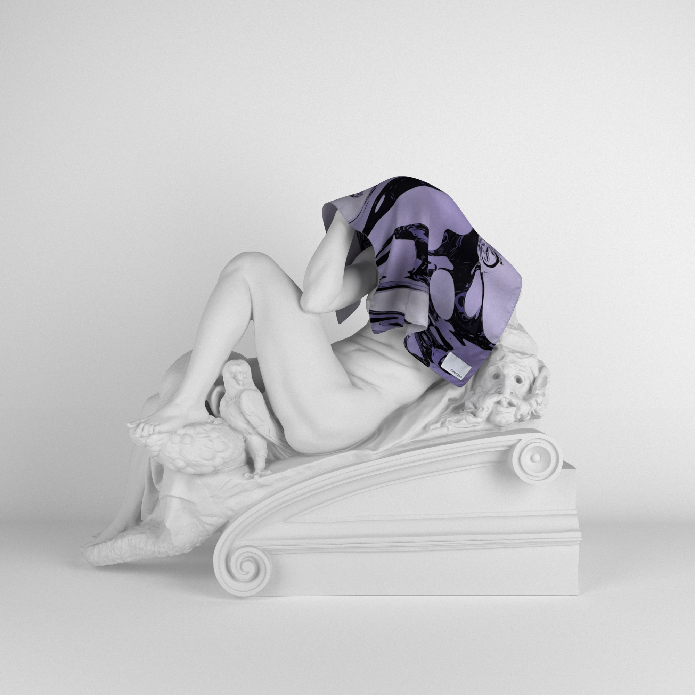
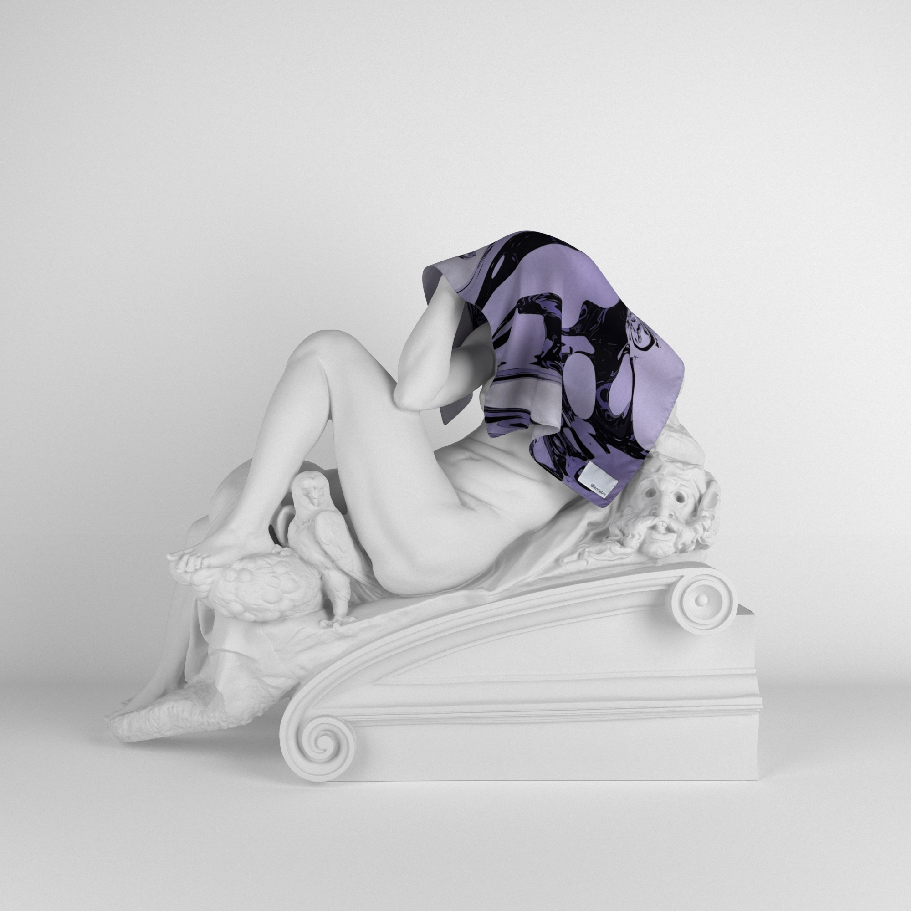

블렌더블
웹사이트 바로가기→브랜드 철학
블렌더블(Blendable)은 '어디든 섞일 수 있는'이라는 뜻으로 기획된 홈 패브릭 브랜드입니다. 뜻에 따라 전체적인 브랜드 컨셉을 전시회로 설정했으며, 여러 신진 디자이너들과 아티스트와의 협업을 염두에 두고 브랜딩 했습니다.
메인 라벨을 전시회 혹은 미술관에서 볼 수 있는 작품 캡션에서 영감을 받아 심플하게 구상했고 패브릭 포스터 위주로 초기 아이템을 구성했으며 3D 모델링을 통해 만들어진 작품을 프린팅하여 예술성을 강조했습니다.
이러한 과정을 통해 만들어진 블렌더블은 인테리어와 홈 무드에 대한 관심이 늘어난 모든 세대를 타겟으로 설정한 브랜드입니다.
블렌더블 바로가기
 
